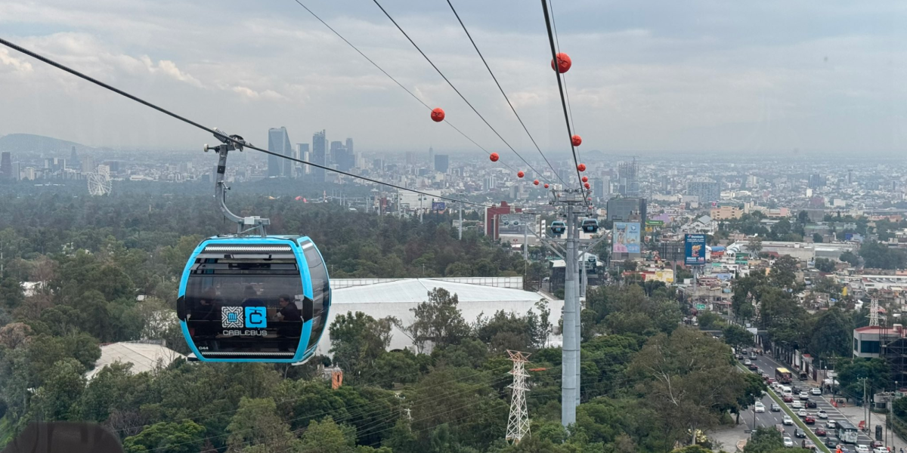
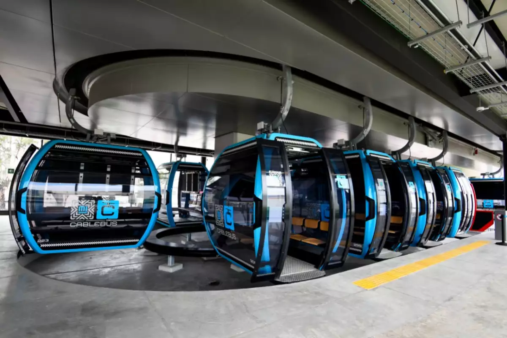
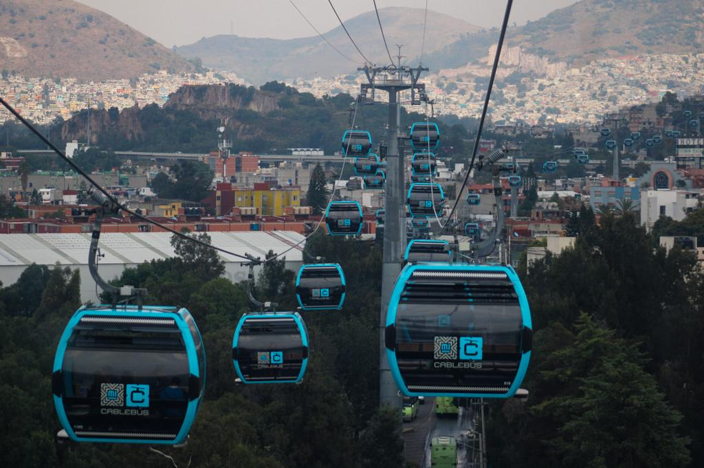
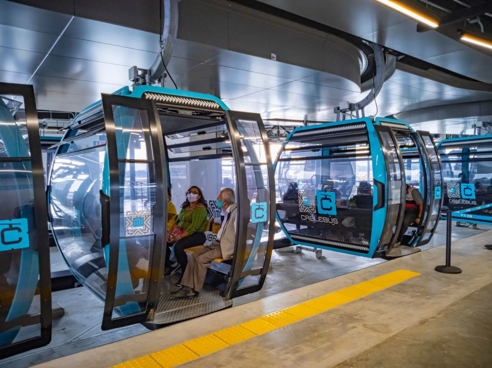

Es un sistema de transporte público tipo teleférico que opera en la Ciudad de México, específicamente en zonas de alta densidad poblacional y terreno montañoso.
Costo

El costo de un viaje en el Cablebús de la CDMX es de 7 pesos mexicanos por trayecto, el cual se paga exclusivamente con la Tarjeta de Movilidad Integrada. Este monto es uniforme en las líneas operativas actualmente y busca mantener la accesibilidad al transporte, especialmente para habitantes de zonas vulnerables. Además, el servicio ofrece gratuidad a personas mayores, personas con discapacidad y menores de cinco años en determinadas líneas El precio del Cablebús se mantiene fijo en 7 pesos sin importar la distancia del recorrido, lo que lo hace más accesible en comparación con otros medios de transporte concesionado que cobran tarifas variables según el trayecto. Esta tarifa única busca garantizar la equidad para los usuarios que realizan recorridos largos en zonas periféricas, ya que en otros transportes podrían gastar mucho más. En contraste, con el mismo costo en el Cablebús, se puede recorrer toda la línea de principio a fin, lo que lo convierte en una opción económica y justa para quienes dependen diariamente de este servicio.
Tiempo

Uno de los mayores beneficios del Cablebús es la reducción significativa en los tiempos de traslado para los habitantes de zonas altas y de difícil acceso. Antes de su implementación, muchos usuarios podían tardar hasta una hora o más en descender hacia conexiones con el Metro o el Metrobús; con el Cablebús, ese mismo recorrido puede reducirse a menos de 20 minutos. Esta eficiencia no solo mejora la calidad de vida al ahorrar tiempo valioso en los trayectos diarios, sino que también permite a las personas invertirlo en actividades personales, familiares o laborales. Por otro lado, el tiempo total de recorrido depende de cada línea, pero en general los viajes completos duran entre 20 y 35 minutos de extremo a extremo, lo que resulta competitivo frente a los congestionados trayectos en microbuses o camiones. Por ejemplo, la Línea 1, que conecta Indios Verdes con Cuautepec, recorre más de 9 kilómetros en aproximadamente 33 minutos, mientras que la Línea 2, de Constitución de 1917 a Santa Marta, cubre 10.6 kilómetros en alrededor de 36 minutos. Estos tiempos se mantienen constantes gracias a que el sistema aéreo no depende del tráfico terrestre, lo que lo convierte en una alternativa segura y confiable para la movilidad cotidiana.
Rutas

Actualmente el Cablebús de la Ciudad de México cuenta con dos líneas en operación y una en construcción. La Línea 1 conecta Indios Verdes con Cuautepec, en la alcaldía Gustavo A. Madero, con una extensión de 9.2 kilómetros y un recorrido de aproximadamente 33 minutos. Tiene 6 estaciones que atraviesan zonas de difícil acceso en la sierra urbana de la capital, lo que la convierte en un eje fundamental para integrar a esta parte de la ciudad con el sistema de transporte masivo. Por su parte, la Línea 2 se extiende de Constitución de 1917 a Santa Marta, en la alcaldía Iztapalapa, con una longitud de 10.6 kilómetros y 7 estaciones. Este trayecto se cubre en unos 36 minutos, conectando áreas densamente pobladas con terminales de Metro y otras rutas de transporte público. Además, ya se proyecta la Línea 3, que tendrá alrededor de 5.4 kilómetros y conectará el oriente con el sur de la ciudad, reforzando el papel del Cablebús como una red estratégica para reducir desigualdades en movilidad.
Historia

La historia del Cablebús comienza como parte de una estrategia del Gobierno de la Ciudad de México para atender la desigualdad en movilidad en zonas periféricas y de difícil acceso. Durante décadas, los habitantes de colonias en cerros y barrancas tuvieron que depender de microbuses inseguros y con trayectos muy largos para llegar a estaciones de transporte masivo. Inspirado en experiencias internacionales como el Metrocable de Medellín en Colombia, el proyecto se concibió como una solución sustentable y social, que no solo mejorara la conectividad, sino que también ofreciera un transporte digno, económico y rápido. La primera línea del Cablebús fue inaugurada el 11 de julio de 2021, uniendo Indios Verdes con Cuautepec en la alcaldía Gustavo A. Madero. Esta obra representó un avance histórico, pues fue el primer teleférico urbano masivo en México, diseñado con la capacidad de transportar a miles de personas diariamente sobre zonas montañosas y calles estrechas. Pocos meses después, el 8 de agosto de 2021, se inauguró la Línea 2, que va de Constitución de 1917 a Santa Marta, en Iztapalapa, consolidando al Cablebús como un componente central de la movilidad capitalina. Tras el éxito de estas primeras líneas, el gobierno anunció la construcción de la Línea 3, que conectará los barrios de Los Pinos con Vasco de Quiroga, en Cuajimalpa, con el objetivo de seguir extendiendo la red hacia zonas con grandes pendientes y dificultades de acceso. Con ello, el Cablebús se ha convertido en un símbolo de modernización y de justicia social, al garantizar un transporte rápido, seguro y accesible para comunidades históricamente relegadas en la planeación urbana.